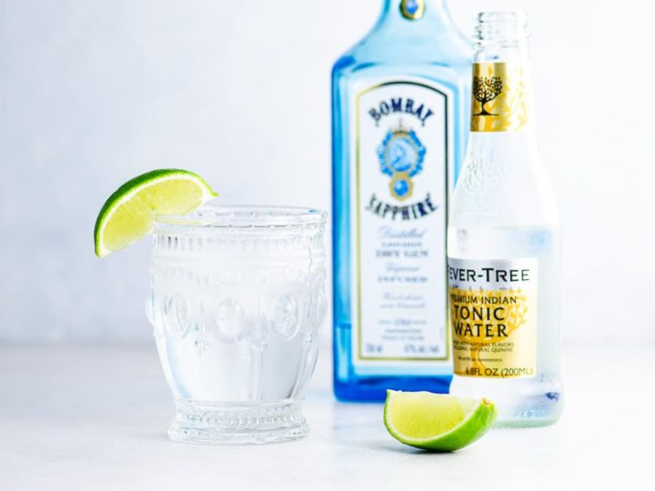

Gin & Tonic

Juniper Lime Gin & Tonic
The best gin and tonic balances the bitterness of tonic water against the aromatics of the gin. A London dry gin (such as Beefeater), Plymouth or Bombay work well. London dry gins will be more straightforward in flavor while Plymouth gin will be a bit more aromatic. We’ve also used Bombay Sapphire and loved it, but we really enjoy Sapphire’s extra spiciness.
Ingredients
- Large ice cubes
- 1 (1.5oz) Bombay Saphire Gin
- 5 or 6 juniper berries
- 6oz tonic water
- 1 twist lime peel
Steps
- Stir ice cubes in a glass and drain any water that accumulates. Add gin and juniper berries.
- Twist lime peel to release lime essence into the glass. Add tonic water and stir. Garnish with the lime peel.